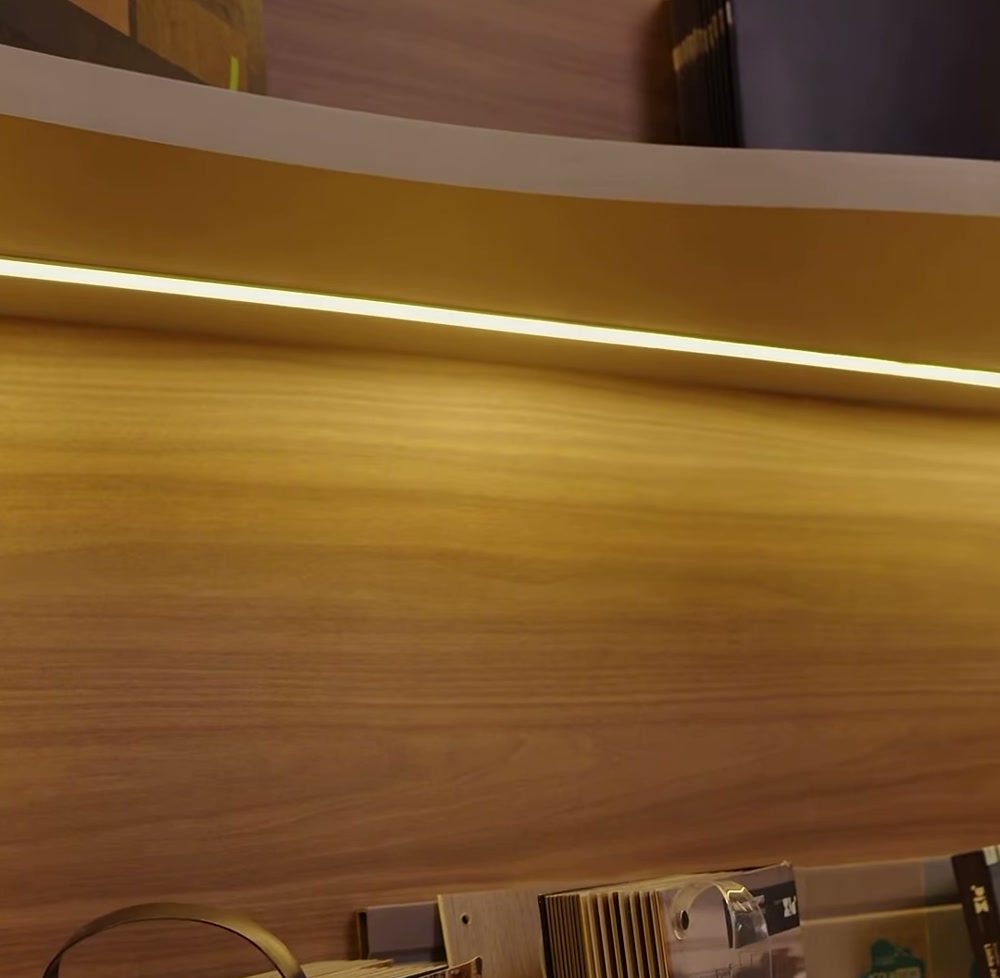

Domus para arquitetos e designers
A tecnologia faz parte do seu projeto.
Automação, iluminação, áudio e conforto pensados com você. Traga seu cliente ao showroom e apresente as possibilidades na prática.

Seu projeto. Uma experiência real.Showroom Domus em Indaiatuba, SP.
A gente fecha o projeto com você.
Seu cliente conhece o ambiente que você desenhou. No showroom, ele também pode conhecer a iluminação, o som e a automação que vão fazer parte dessa experiência.
A Domus soma a tecnologia ao seu trabalho e participa dessa escolha junto com você.
Traga a automação para a conversa desde o começo.
Projeto, rotina e tecnologia se encontram antes da escolha dos equipamentos.
Traga o projeto e suas ideias.
Compartilhe os ambientes, a etapa da obra e o que o cliente espera. A conversa começa pelo uso da casa e pelas possibilidades de integração.
Apresente a experiência ao cliente.
Use o showroom para mostrar luz, áudio e automação funcionando. Ajude o cliente a compreender o que cada solução acrescenta à rotina.
Converse sobre a integração.
Relacione as soluções escolhidas à arquitetura, aos equipamentos e à infraestrutura. A Domus participa da definição com você.

Soluções que conversam com a arquitetura.
Do projeto minimalista ao mais sofisticado, conheça as possibilidades e os acabamentos no showroom. A escolha acompanha as necessidades de cada ambiente.
Conheça a Domus
pela voz do Reinaldo.
Três conversas sobre tecnologia, showroom e parceria com arquitetos.

Uma visita com o seu projeto
Veja de perto.
Traga seu cliente.
Conheça o espaço, experimente as soluções e converse sobre o seu próximo projeto. O showroom da Domus fica em Indaiatuba.
Vamos olhar o seu próximo projeto?
Converse com a Domus e conheça as possibilidades para o seu cliente.